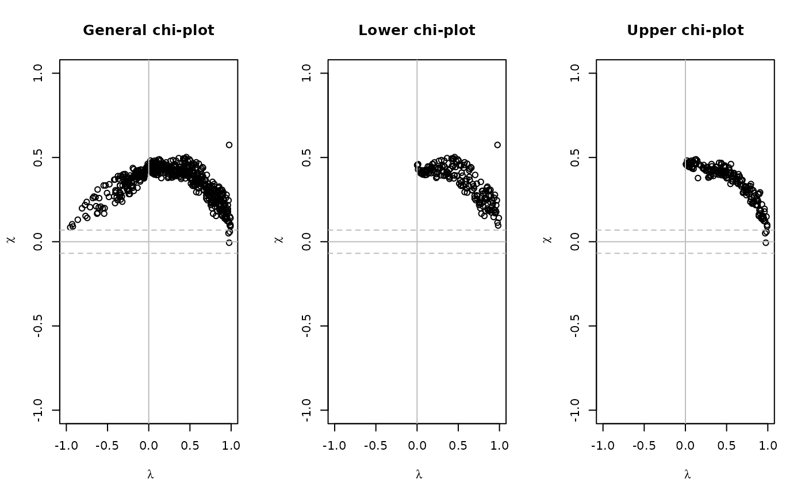

This function creates a chi-plot of given bivariate copula data.
BiCopChiPlot(u1, u2, PLOT = TRUE, mode = "NULL", ...)Data vectors of equal length with values in \([0,1]\).
Logical; whether the results are plotted. If PLOT = FALSE, the values lambda, chi and control.bounds are
returned (see below; default: PLOT = TRUE).
Character; whether a general, lower or upper chi-plot is
calculated. Possible values are mode = "NULL", "upper" and
"lower". "NULL" = general chi-plot (default)"upper" = upper chi-plot"lower" = lower chi-plot
Additional plot arguments.
Lambda-statistics (x-axis).
Chi-statistics (y-axis).
A 2-dimensional vector of bounds
\(((1.54/\sqrt{n},-1.54/\sqrt{n})\), where \(n\) is the length of
u1 and where the chosen values correspond to an approximate
significance level of \(10\%\).
For observations \(u_{i,j},\ i=1,...,N,\ j=1,2,\) the chi-plot is based on the following two quantities: the chi-statistics $$\chi_i = \frac{\hat{F}_{1,2}(u_{i,1},u_{i,2}) - \hat{F}_{1}(u_{i,1})\hat{F}_{2}(u_{i,2})}{ \sqrt{\hat{F}_{1}(u_{i,1})(1-\hat{F}_{1}(u_{i,1})) \hat{F}_{2}(u_{i,2})(1-\hat{F}_{2}(u_{i,2}))}}, $$ and the lambda-statistics $$\lambda_i = 4 sgn\left( \tilde{F}_{1}(u_{i,1}),\tilde{F}_{2}(u_{i,2}) \right) \cdot \max\left( \tilde{F}_{1}(u_{i,1})^2,\tilde{F}_{2}(u_{i,2})^2 \right), $$ where \(\hat{F}_{1}\), \(\hat{F}_{2}\) and \(\hat{F}_{1,2}\) are the empirical distribution functions of the uniform random variables \(U_1\) and \(U_2\) and of \((U_1,U_2)\), respectively. Further, \(\tilde{F}_{1}=\hat{F}_{1}-0.5\) and \(\tilde{F}_{2}=\hat{F}_{2}-0.5\).
These quantities only depend on the ranks of the data and are scaled to the interval \([0,1]\). \(\lambda_i\) measures a distance of a data point \(\left(u_{i,1},u_{i,2}\right)\) to the center of the bivariate data set, while \(\chi_i\) corresponds to a correlation coefficient between dichotomized values of \(U_1\) and \(U_2\). Under independence it holds that \(\chi_i \sim \mathcal{N}(0,\frac{1}{N})\) and \(\lambda_i \sim \mathcal{U}[-1,1]\) asymptotically, i.e., values of \(\chi_i\) close to zero indicate independence—corresponding to \(F_{1, 2}=F_{1}F_{2}\).
When plotting these quantities, the pairs of \(\left(\lambda_i, \chi_i \right)\) will tend to be located above zero for positively dependent margins and vice versa for negatively dependent margins. Control bounds around zero indicate whether there is significant dependence present.
If mode = "lower" or "upper", the above quantities are
calculated only for those \(u_{i,1}\)'s and \(u_{i,2}\)'s which are
smaller/larger than the respective means of
u1\(=(u_{1,1},...,u_{N,1})\) and
u2\(=(u_{1,2},...,u_{N,2})\).
Abberger, K. (2004). A simple graphical method to explore tail-dependence in stock-return pairs. Discussion Paper, University of Konstanz, Germany.
Genest, C. and A. C. Favre (2007). Everything you always wanted to know about copula modeling but were afraid to ask. Journal of Hydrologic Engineering, 12 (4), 347-368.
## chi-plots for bivariate Gaussian copula data
# simulate copula data
fam <- 1
tau <- 0.5
par <- BiCopTau2Par(fam, tau)
cop <- BiCop(fam, par)
set.seed(123)
dat <- BiCopSim(500, cop)
# create chi-plots
op <- par(mfrow = c(1, 3))
BiCopChiPlot(dat[,1], dat[,2], xlim = c(-1,1), ylim = c(-1,1),
main="General chi-plot")
BiCopChiPlot(dat[,1], dat[,2], mode = "lower", xlim = c(-1,1),
ylim = c(-1,1), main = "Lower chi-plot")
BiCopChiPlot(dat[,1], dat[,2], mode = "upper", xlim = c(-1,1),
ylim = c(-1,1), main = "Upper chi-plot")

par(op)